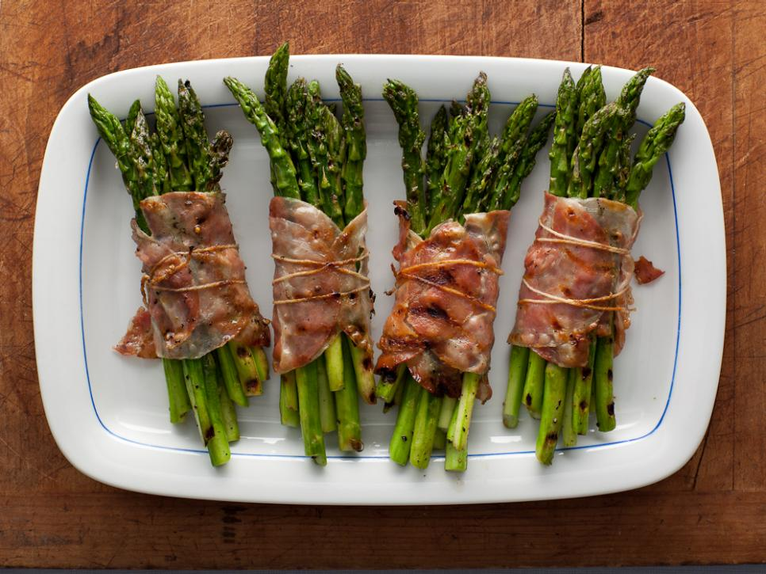

Bacon-wrapped asparagus bundles

Description
Ingredients
- 1.5 pounds asparagus spears, trimmed 4 to 5 inches long tips
- Extra-virgin olive oil, for drizzling
- grinds black pepper
- 4 slices center cut bacon or pancetta
- Chopped chives or scallions, optional garnish
Steps
- Preheat oven, if using, to 400 degrees F.
- Lightly coat asparagus spears in extra-virgin olive oil. Season the asparagus with black pepper. Take a quick count of the spear tips. Divide the total number by four. Gather that number of spears and use a slice of bacon to wrap the bundle and secure the spears together. Repeat with remaining ingredients.
- To grill, place bundles on hot grill and cover. Cook 10 to 12 minutes until bacon is crisp and asparagus bundles are tender.
- For oven preparation, place bundles on slotted broiler pan. Bake 12 minutes.